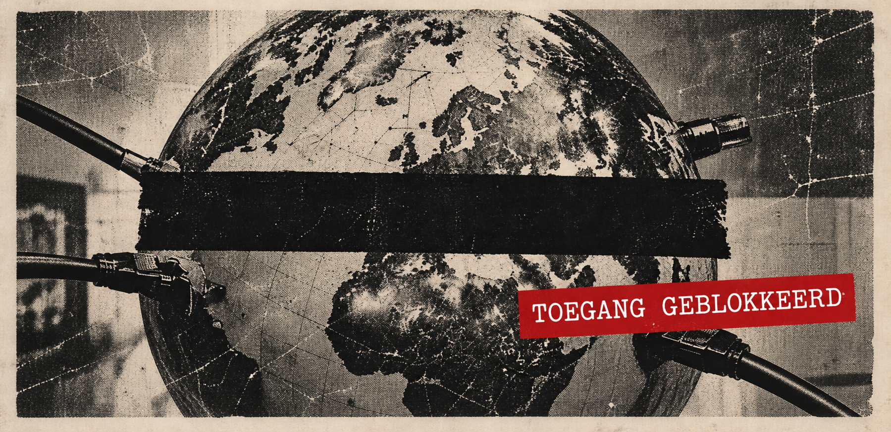
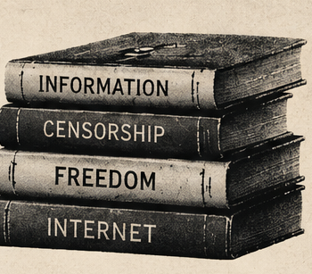
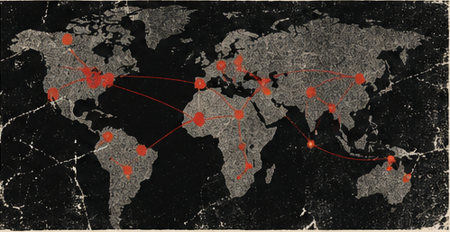

Wie bepaalt wat wij mogen weten?
Een internet zonder censuur

Het gebruik van internet is voor ons allemaal heel waardevol. In het internettijdperk waarin we leven, is het blokkeren van websites waarop nieuws over regeringen wordt gepubliceerd of waarop mensen belangrijke informatie kunnen vinden, door gekozen of niet-gekozen regeringen, iets wat ik echt wil veranderen. Want als we het hier hebben over "internet voor iedereen", dan vind ik dat een van de belangrijkste punten het opheffen van deze censuur is. Internetgebruikers proberen natuurlijk deze censuur te omzeilen en vinden daar bepaalde oplossingen voor, maar ook deze oplossingen worden door regeringen geblokkeerd.

Natuurlijk weet ik dat er op internet inhoud bestaat die verboden moet worden, maar de manier om daarmee om te gaan mag niet zijn dat kritisch denken en de toegang tot informatie worden weggenomen. Het maakt niet uit of deze informatie waar of onwaar is, want als er op internet een systeem zonder censuur bestaat, zullen mensen zelf ook in staat zijn om de waarheid van informatie in twijfel te trekken. Bovendien vind ik het, in een omgeving waarin regeringen zoveel liegen, geen realistische verklaring als een regeringsfunctionaris zegt:"Ah ja, dit is een leugen, daarom hebben we het geblokkeerd" Veel regeringsfunctionarissen kunnen namelijk dit soort websites gemakkelijk naar eigen wens blokkeren. Dit is duidelijk een beperking van de vrijheid. Mensen hebben veel opgeofferd voor een vrij leven in de echte wereld. In sommige landen is die vrijheid bereikt. Nu wordt geprobeerd onze vrijheid in het sociale leven te beperken door het internet te beperken, en dat zullen we niet toestaan. Toch zijn er ook creatieve manieren waarop mensen proberen deze censuur te doorbreken. Laatst las ik in een artikel dat een organisatie genaamd Reporters Without Borders (RSF) een bibliotheek heeft gebouwd in het spel Minecraft. Toen ik ontdekte dat mensen in landen waar de toegang tot informatie wordt geblokkeerd, via een Minecraft-server toegang kunnen krijgen tot deze bibliotheek en daar kunnen lezen wat ze willen, vond ik dit onderwerp heel interessant. Eigenlijk liet dit mij zien hoe belangrijk toegang tot informatie is en hoe gevoelig mensen voor dit onderwerp zijn. Daarnaast ontwikkelen veel bedrijven en organisaties hun eigen webbrowsers zodat mensen toegang kunnen krijgen tot ongecensureerde inhoud en proberen ze deze beperkingen zoveel mogelijk te omzeilen. Als reactie daarop blokkeren regeringen ook dit soort webbrowsers.

Deze voorbeelden laten mij zien dat ik zelf ook een bijdrage wil leveren aan een internet zonder censuur. In deze situatie wil ik samenwerken met organisaties zoals Reporters Without Borders (RSF), hen ondersteunen en deel uitmaken van dit doel. Ik denk dat het een heel mooi gevoel zou zijn om op de een of andere manier dit systeem van censuur te doorbreken en informatie bij mensen te brengen. Ik weet op dit moment nog niet precies hoe ik dit kan doen, maar ik zie het als mijn taak om als ontwerper met behulp van UI/UX bij te dragen aan de ontwikkeling van de webbrowsers van dit soort bedrijven of organisaties, zodat mensen deze browsers veel gemakkelijker kunnen gebruiken en ik op die manier kan helpen bij hun wens voor een internet zonder censuur.
Als het internet van iedereen is, waarom mag niet iedereen alles weten?